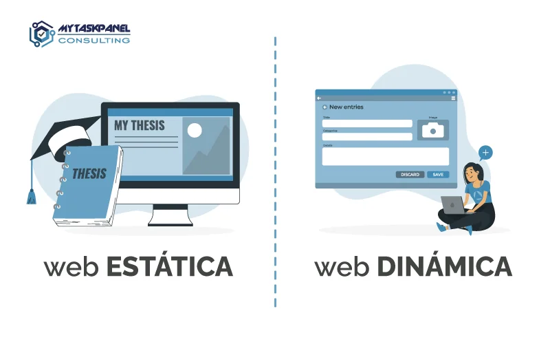

La construcción de aplicaciones web es un proceso que permite desarrollar páginas y sistemas que funcionan mediante un navegador. Para su creación se utilizan diferentes lenguajes y tecnologías, como HTML y CSS, estas herramientas permiten integrar contenido, diseño, funciones e interacción, dando facilidad a el acceso a información.
Construir aplicaciones web consiste en desarrollar programas que funcionan mediante un navegador web, como Google Chrome, Microsoft Edge o Firefox. Estas aplicaciones permiten realizar diferentes actividades, como consultar información, registrarse, comprar productos, enviar mensajes, realizar trámites o administrar datos. Para desarrollar una aplicación web se combinan diferentes tecnologías, lenguajes de programación y herramientas que permiten crear su estructura, diseño, funcionamiento y almacenamiento de información.
| Accesibilidad | Desarrollo eficiente | Simplicidad para el usuario | Escabilidad |
|---|---|---|---|
| Las aplicaciones web son accesibles desde todos los navegadores web y desde diferentes dispositivos personales y empresariales. Equipos de diferentes ubicaciones pueden acceder a documentos compartidos, sistemas de administración de contenidos y otros servicios empresariales a través de aplicaciones web basadas en suscripciones. | Tal y como se detalló, el proceso de desarrollo para aplicaciones web es relativamente sencillo y rentable para las empresas. Los equipos pequeños pueden lograr ciclos de desarrollo cortos, lo que hace que las aplicaciones web sean una manera eficiente y asequible de desarrollar programas de computación. Además, dado que la misma versión funciona en todos los navegadores y dispositivos modernos, no tendrá que crear un número elevado de iteraciones diferentes para varias plataformas. | Los usuarios no tienen que descargar las aplicaciones web, lo que hace que sean fáciles de acceder a la vez que se prescinde de mantenimiento y capacidad en el disco duro por parte del disco duro. Las aplicaciones web reciben actualizaciones de software y seguridad de manera automática, lo que significa que siempre están actualizadas y presentan menor riesgo de sufrir brechas de seguridad. | Las empresas que utilizan aplicaciones web pueden agregar usuarios cuando sea necesario, sin necesidad de infraestructura adicional o hardware costoso. Además, la mayor parte de los datos de las aplicaciones web se almacena en la nube, lo que significa que su empresa no tendrá que invertir en capacidad de almacenamiento adicional para ejecutar aplicaciones web. |
Una aplicación web funciona mediante la comunicación entre el usuario, el navegador y un servidor; el usuario realiza una acción, como abrir una página o enviar información; el navegador envía la solicitud al servidor, este procesa los datos y devuelve una respuesta que se muestra en pantalla.
Usuario → Navegador → Servidor → Base de datos → Servidor → Navegador → Usuario
Por ejemplo, cuando una persona inicia sesión, la aplicación recibe su usuario y contraseña, verifica los datos en una base de datos y permite o rechaza el acceso.
Las aplicaciones web pueden clasificarse en diferentes tipos dependiendo de su funcionamiento, diseño y finalidad. Cada una está creada para realizar distintas actividades, desde mostrar información de manera sencilla hasta permitir una interacción constante con los usuarios.

Se caracterizan por tener un contenido fijo y no interactivo, por lo que son comunes para mostrar información básica en blogs, portfolios o landing pages informativas. La ventaja es que son rápidas y de fácil lectura, aunque no tienen mucha interactividad y su contenido es poco personalizable.
Se usan para dar información de forma clara, sin necesidad de interacción. Este enfoque es habitual en webs informativas, landing pages, portfolios o documentación. Por ejemplo, un diseñador que muestra proyectos anteriores o una startup que valida una idea con una web de una sola página suelen empezar por aquí, ya que casi no necesita mantenimiento. La mayor ventaja es el rendimiento. Al no depender de bases de datos ni lógica backend, las páginas cargan muy rápido y requieren pocos recursos del servidor. Las webs estáticas suelen obtener mejores resultados en PageSpeed Insights que muchas dinámicas porque cargan HTML, CSS y JavaScript ya preparados y evitan tiempos de respuesta del servidor.
Las aplicaciones web dinámicas generan contenido en tiempo real a partir de datos del servidor y bases de datos, lo que les permite responder a los usuarios y evolucionar con el tiempo. Este es el modelo más común cuando un sitio necesita interacción, cuentas o contenido que se actualiza con frecuencia. Interactúas con este tipo de comportamiento dinámico cada vez que inicias sesión, envías un formulario o navegas por contenido que cambia según categorías o preferencias. Los sistemas de gestión de contenidos y las plataformas de ecommerce dependen de esta estructura para mantenerse flexibles.
La principal ventaja es la personalización a gran escala. Puedes actualizar el contenido sin volver a desplegar el sitio, personalizar experiencias para diferentes personas y ampliar las funciones de forma incremental. Las grandes plataformas gestionan millones de páginas dinámicas al día combinando lógica backend con almacenamiento en caché y balanceo de carga. Un ejemplo conocido de sitio web dinámico es un blog con WordPress, donde las páginas se generan desde una base de datos según las búsquedas, las categorías o las fechas de publicación.